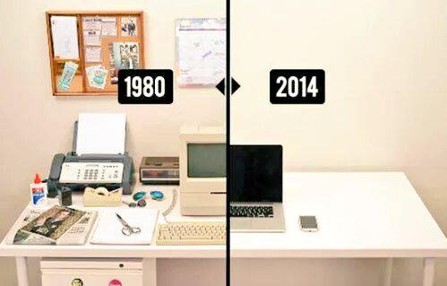

Design Thinking
Innovación
¿Qué es la innovación?
Innovar es realizar algo nuevo y diferente, que tenga impacto.
Anthony D. Scott¿Son todas las innovaciones iguales?
Hay distintos niveles de innovación
Marginal
Mejorar la propuesta de valor actual
Incremental
Ampliar la propuesta de valor existente (nuevas funcionalidades)
Radical
Diseñar una nueva porpuesta de valor
Ejemplo de Innovación marginal
Ejemplo de innovación incremental
Ejemplo de innovación radical
no hay correlación directa entre impacto y cambio, depende del contexto.
Hay distintos niveles de innovación
Marginal
Mejorar la propuesta de valor actual
Incremental
Ampliar la propuesta de valor existente (nuevas funcionalidades)
Design Thinking
Radical
Diseñar una nueva porpuesta de valor
Consigna:
Vuelvan a su zapatilla, ahora identifica tu usuario objetivo, y piensa si has realizado una mejora:
-
Marginal
Hacer lo mismo que antes pero mejor
-
Incremental
Agregar nuevas funcionalidades/características
-
Radical
Hacer algo nuevo
"Todo quien idea curso de acción apuntando a cambiar situaciones existentes por preferentes, diseñan"
Herbert Simon¿Por qué se volvió tan importante innovar?
vivimos en el siglo
VUCA
- V: La volatilidad de los hechos
- U: La incertidumbre alrededor de una causa conocida
- C: La complejidad de michas variables interconcetadas
- A: La ambigüedad entre conexiones y causas
Época de cambio exponencial
9,223,372,036,854,780,000
Granos de arroz
461,168,602,000
Toneladas de arroz
"No hay razón para creer que la gente quiera tener una computadora en su casa"
Ken Olson, Presidente de DEC, 1977
Ordenador Apple II, desarrollado por Steve Jobs y Steve Wozniak en un garaje.
2007 Laptop DELL con primer sistema Linux integrado
2017 Iphone 7 plus con apple watch interconcetado en la nube
"El cambio nunca va a volver a ser tan lento"
¿Qué oportunidades presenta este contexto?
Ofertas que disminuyen la asimetría de la información